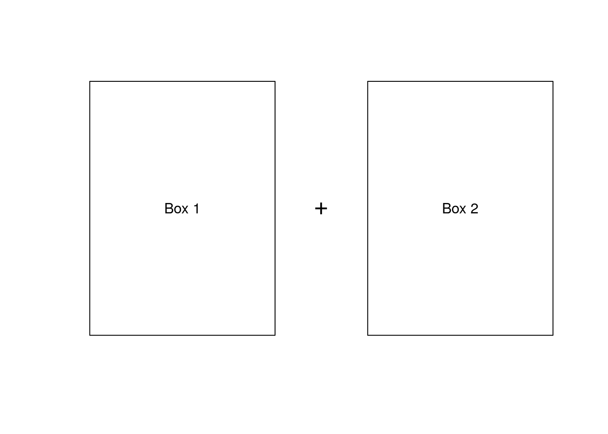

Chapter 1 First week
In this overview module, we’ll go over some information and resources to help you get started and succeed in the course.
1.1 Introduction
1.1.1 Welcome to Developing Data Products
Hello everyone, my name is Bryan Caffo and I am excited to welcome you to the Developing Data Products course. This course is designed to provide you with the necessary tools for improving the data analysis process and making data-driven decisions. Shaun Cross and I, both from the Department of Biostatistics at the Johns Hopkins Bloomberg School of Public Health, have co-developed this course. We will present the common practice techniques for building in-demand data tools in R. Throughout this course, we will cover a range of topics including R markdown and Quarto, which allow you to create websites, PDFs, presentations, and even e-books from a single file in R. We will also teach you the latest features of the Shiny package, which you can use to create interactive web applications in R. In addition, we will cover interactive graphics using Plotly and Leaflet, which enables you to create beautiful maps that you can share online. We’ve also added a section on how to use swirl and swirlify to design courses in R so that practice your understanding. We believe that the key word in Data Science is “science”. Our specialization is focused on providing you with three things: (1) an introduction to the key ideas behind working with data in a scientific way that will produce new and reproducible insight, (2) an introduction to the tools that will allow you to execute on a data analytic strategy, from raw data in a database to a completed report with interactive graphics, and (3) on giving you plenty of hands on practice so you can learn the techniques for yourself. This course represents the final cog in a data science application, creating an end-usable data product.
We are excited about the opportunity to attempt to scale Data Science education. We intend for the courses to be self-contained, fast-paced, and interactive. Thank you for joining us, and we look forward to seeing you in class!
1.1.2 Syllabus
In this section you will get to learn a bit more about your instructors, the course, the policies and the course objectives.
1.1.2.1 Course Instructor(s)
The primary instructor of this class is Brian Caffo Brian is a professor at Johns Hopkins Biostatistics and co-directs the SMART working group This class is co-taught by Roger Peng and Jeff Leek.
1.1.2.2 Course Description
A data product is the production output from a statistical analysis. Data products automate complex analysis tasks or use technology to expand the utility of a data informed model, algorithm or inference. This course covers the basics of creating data products using Shiny, R packages, and interactive graphics. The course will focus on the fundamentals of creating a data product that can be used to tell a story about data to a mass audience.
In this class students will learn a variety of core tools for creating data products in R and R Studio in specific. Students will be evaluated via quizzes and a culminating project.
Course Content
The lectures will be taught over four weeks with the third week dedicated to creating R packages.
The weeks are organized as follows
- Shiny
- Quarto
- Creating and deploying projects
- Creating R packages, classes and methods
1.1.2.3 Github repository
This course is hosted on GitHub at https://github.com/B7M/Developing-Data-Products
Please issue pull requests so that we may improve the materials.
1.1.2.4 YouTube
To keep the course materials as up to date as possible, we’ve decided to eliminate the video contents; however, if you think watching videos could help you have a grasp of the information faster we suggest you watch the videos on YouTube, most of them can be found here:
https://www.youtube.com/playlist?list=PLpl-gQkQivXhr9PyOWSA3aOHf4ZNTrs90
1.1.2.5 Book: Developing Data Products in R
This book introduces the topic of Developing Data Products in R. A data product is the ideal output of a Data Science experiment. This book is based on the Coursera Class “Developing Data Products” as part of the Data Science Specialization. Particular emphasis is paid to developing Shiny apps and interactive graphics.
The book is available here: https://leanpub.com/ddp
It’s variable pricing, including free! It also includes some content that was not covered in the class and omits some other. It’s a little rough, but as I work on it you’ll get all of the updates.
1.1.2.6 Weekly quizzes
- There are three weekly quizzes.
- You must earn a grade of at least 80% to pass a quiz
- You may attempt each quiz up to 3 times in 8 hours.
- The score from your most successful attempt will count toward your final grade.
1.1.2.7 Course Project
The Course Project is an opportunity to demonstrate the skills you have learned during the course. It is graded through peer assessment. You must earn a grade of at least 80% to pass the course project.
1.1.2.8 Grading policy
You must score at least 80% on all assignments (Quizzes & Project) to pass the course.
Your final grade will be calculated as follows:
- Quiz 1 = 20%
- Quiz 2 = 20%
- Quiz 3 = 20%
- Course project = 40%
1.1.2.9 Differences of opinion
Keep in mind that currently data analysis is as much art as it is science - so we may have a difference of opinion - and that is ok! Please refrain from angry, sarcastic, or abusive comments on the message boards. Our goal is to create a supportive community that helps the learning of all students, from the most advanced to those who are just seeing this material for the first time.
1.1.3 Some Basics
A couple of first week housekeeping items. First, make sure that you’ve completed R Programming and the Data Scientist’s Toolbox course. Reproducible Research would be helpful, but is not mandatory. At a minimum you must know: very basic git, basic R and very basic knitr.
You can clone the whole repo with (http)
git clone https://github.com/B7M/Developing-Data-Products.git or (ssh) git clone git@github.com:B7M/Developing-Data-Products.git
Going through the R code is the best way to familiarize yourself with the lecture materials.
The lecture material for this class is largely front-loaded. This is because the latter time of the class is devoted to developing your data application. Thus the class should be doable in about a 1 month’s time or maybe less. Though make sure you’re keeping up with the classes at the beginning so that you have some space in your schedule later on for app development!
If you’d like to keep up with the instructors I’m (bcaffo?) on twitter, Roger is (rdpeng?) and Jeff is (jtleek?). The Department of Biostat here is (jhubiostat?).
https://datasciencespecialization.github.io/Developing_Data_Products/welcome.html
1.1.3.1 Community Site - Read on GitHub
Since the beginning of the Data Science Specialization, we’ve noticed the unbelievable passion students have about our courses and the generosity they show toward each other on the course forums. A couple students have created quality content around the subjects we discuss, and many of these materials are so good we feel that they should be shared with all of our students.
We’re excited to announce that we’ve created a site using GitHub Pages: http://datasciencespecialization.github.io/ to serve as a directory for content that the community has created. If you’ve created materials relating to any of the courses in the Data Science Specialization, please send us a pull request so we can add a link to your content on our site. You can find out more about contributing here: https://github.com/DataScienceSpecialization/DataScienceSpecialization.github.io#contributing
We can’t wait to see what you’ve created and where the community can take this site!
1.1.3.2 R and RStudio Links & Tutorials
If you haven’t yet installed R and RStudio, you’ll need to do so now. Here are some links and video tutorials.
Links
Tutorials
Installing R for Windows Installing R for Mac Installing RStudio Mac
1.2 Shiny Part 1
1.2.1 Shiny
Remember to read the book chapters on Shiny.
Shiny is an important enough topic to devote a lot of time to it. Shiny is a product by RStudio and it is described by RStudio as “A web application framework for R”. They further add “Turn your analyses into interactive web applications with no HTML, CSS, or JavaScript knowledge required”. This is mostly true, though a little HTML at least would be useful for understanding some of the concepts. We’ll proceed as if your html knowledge is very basic and no more advanced than understanding heading levels for fonts. It is important to distinguish between a Shiny applications (app) and a Shiny server. A Shiny server is required to host a shiny app for the world. Otherwise, only those who have have shiny installed and have access to your code could run your web page, which is really defeating the purpose of making a web page in the first place.
In this class, we won’t cover creating a shiny server, as that requires understanding a little linux server administration. Instead, we’ll run our apps locally and use RStudio’s service for hosting shiny apps on a platform called shinyapps.io. In other words, RStudio does the server work for your so that all you need to worry about is building your app. Shinyapps.io is free up to a point in that you can only run 5 apps for a certain amount of time per month. This will be fine for our purposes, but if you’re really going to get into making Shiny apps, you’ll have to spring for a paid plan or run your own server.
1.2.2 Shinyapps.io Project
Shinyapps.io Project
Some people in this session let us know that they are concerned about running up against the 25-hour per month limit on the free tier of shinyapps.io.
Should you hit the limit on the free plan, RStudio will send you a message. If you receive the message and are more than a few days from getting a fresh 25 hours on your monthly renewal, please send an email to shinyapps-support with the email address you use on the service and the account name you are using (the first part of the URL). RStudio will then increase your limit so you can continue working on your project.
Since there are a lot of folks in the class we’d appreciate if you only emailed RStudio after you get the message and only if you feel you’ll need more time.
1.2.3 Shiny 1.1
Here we will introduce Shiny, which is the cornerstone of this course and we will be using it to develop data products. Shiny is a web development framework that is based on R, so you only need to know R to use it. With Shiny, you can use R for both the back end and front end of the development process. This means you don’t need to be familiar with standard tools like JavaScript, CSS and HTML. However, we will briefly talk about these later in the course. So, let’s talk about Shiny and its use in data science. Shiny has been a game-changer for data scientists who specialize in R and focus on developing algorithms and analysis. However, if you come from a web development background, you probably have a different set of tools at your disposal, and Shiny may not be your first choice. Shiny is a great tool for those who want to prototype potential data products, especially if you are a smaller organization. For larger organizations, Shiny can be used to create a prototype, which can then be converted by other skilled professionals into a more polished and visually appealing product using compiled languages, JavaScript, and HTML.
With Shiny we create the GUI in R, the algorithms and everything else that are powering it. That means your time to create a data product is completely minimized. As we mentioned Shiny is a product created by R Studio and it’s free; however, hosting Shiny on a server, could potentially cost you money because you need to actually have a web server that is not only going to serve up the web pages but is also going to call R in the back end to run your algorithms or models. Surprisingly, RStudio has a free hosting service, and that’s what we’re going to use for the class. If you choose to host the application on your own server, you could run off of Amazon AWS or something like that. If you only need portability at a local level, you can create and test Shiny apps locally and share them with others who use RStudio. However, the real benefit of Shiny is the ability to create a web server that anyone can access to display your data analysis or prediction algorithm. In this class, we will use shinyapps.io as our free server, and we will cover how to use it later on. Now, we will start from scratch and build a working web server with R as the back end.
Before we dive into using Shiny, there are a few prerequisites to keep in mind.
Although everything is done in R, some basic knowledge of HTML is recommended. While it’s not necessary to know CSS or JavaScript, familiarity with some HTML commands can help you better understand what the R commands are doing. However, we won’t be teaching HTML here as there are plenty of online tutorials available to learn from.
Shiny incorporates the Bootstrap package, which is not related to the statistics bootstrap, but is instead a web design framework developed by Twitter. Bootstrap provides a set of buttons and other design elements that look good and resize well on various devices, from small phones to large screens. The creators of Bootstrap have put a lot of thought into making it user-friendly. If you are not familiar with web development, it’s recommended to stick with the Bootstrap themes in Shiny.
To learn about the three core components of the applications we’ll be developing, you can refer to some tutorials on HTML, CSS, and JavaScript. Briefly, CSS provides styling, JavaScript is responsible for interactivity, and HTML is the backbone of the front end. It’s crucial to familiarize yourself with HTML, so be sure to check out some HTML tutorials.
To get started with Shiny, you’ll need to install it using the command {r, echo=T, eval=F} install.packages('shiny') and then ensure it’s loaded by typing {r, echo=T, eval=F} library(shiny). Before beginning, it’s worth considering the official Shiny tutorial at RStudio, which this lecture will largely be following.
Alright, let’s quickly go over the basics of a Shiny project before we jump into some code demonstrations. To create a Shiny project, you need two files: ui.R and server.R. The ui.R file is responsible for creating the user interface and determining how your app will look, while the server.R file controls the app’s behavior and functionality. It’s time to transition into some code demonstrations, so please stay tuned.
1.2.4 Shiny 1.2
To create our first app, you’ll need a relatively recent version of RStudio. The easiest way to start is by clicking Alt+F (on Windows) or File (on Mac), then selecting New File, and then Shiny Web App. Name your app whatever you want, such as “myApp” Next, you can choose whether to have the files in a single file or in two separate files, a ui.R and a server.R file. We recommend doing it with two files. It’s preferred to work with many small files rather than one big file containing multiple functions. However, it’s important to note that the specific named functions within the ui.R and server.R files are what’s required, not just the files themselves. Now go ahead and create a directory and the two files, namely ui.R and server.R, by copying the following snippet codes into the pre-populated Shiny files.
#ui.R
library(shiny)
shinyUI(fluidPage(
titlePanel("Data science FTW!"),
sidebarLayout(
sidebarPanel(
h3("Sidebar Text")
),
mainPanel(
h3("Main Panel Text")
)
)
))# server.R
library(shiny)
shinyServer(function(input, output) {
})The ShinyUI function controls the user interface, and the shinyServer function is required in the server.R file. Although our server doesn’t do anything in this point. Let’s take a closer look at the ShinyUI function. The fluidPage function specifies the type of page used to create the user interface, which is typically the default option. The titlePanel function sets the title of the GUI element to Data science FTW! The fluidPage function contains a main panel and a side panel by default, so we use the sidebarLayout function to specify the sidebar’s contents. The sidebarPanel function is used to specify the sidebar’s contents, and the h3 function sets the third-level heading for the slidebar Text and Main panel text. You can run the Shiny app in two ways. Firstly, if you have a recent version of RStudio, you can click Run App to run the app. Secondly, you can switch to the directory where the ui.R and server.R files are located and type runApp() in the console. You can also specify the app’s path within the runApp function. RStudio creates a local web server, which can be accessed using RStudio’s browser. While it’s possible to simply share the code with others so they can run it, that’s not our ultimate goal. Our goal is to have the app running on a webpage. We’ve taken the first step, so now let’s continue and work on adding functionality to make the app more useful.
1.2.5 Shiny 1.3
When we’re constructing our Shiny app using the default workflow, it’s important to remember that we’ll be utilizing R to insert our HTML elements. Fortunately, Shiny incorporates all of the typical HTML tags, such as the various heading tags (h1 through h6), hyperlinks, divs, spans, and other commonly used ones. To view a comprehensive list of all the HTML tags available, simply type ?builder in the R console. In the following sections, we’ll demonstrate how you can use your own HTML file to build your Shiny app, giving you the freedom to create a more intricate page. However, for now, we’ll be using the pre-built functions. The following code example will display the various heading styles and other elements.
library(shiny)
shinyUI(fluidPage(
titlePanel("HTML Tags"),
sidebarLayout(
sidebarPanel(
h1("H1 Text"),
h3("H3 Text"),
em("Emphasized Text")
),
mainPanel(
h3("Main Panel Text"),
code("Some Code!")
)
)
))Let’s go over the various HTML tags that we can utilize in our Shiny app, or at least a subset of them. Specifically, we will be covering the formatting tags. In the UI.R function, we have added some headings including h1, h2, h3, which are all located in the sidebar layout. Additionally, we have included some emphasized text and code text, which is displayed in a mono space format. It’s always best to display code in this format, just like when editing code. Once you run the app, you can see the different heading values, main panel, and code displayed in mono space format. While the app is running if you click on Open in Browser, it will open the app in a web browser. Now in the browser, you can use Ctrl+U on Windows or Option+Command+U on Mac to view the R code that generates the webpage. This will allow you to see how the app uses JavaScript libraries to run Shiny. You may not need to worry about the head section unless you have some familiarity with JavaScript.
Most of the elements you see here are style sheets from Twitter Bootstrap, which provides the formatting for all the buttons and styles that Shiny uses. However, this section also contains some of the input and output components that Shiny requires. The majority of the content we display is in the body, where you can observe how the function creates the HTML commands by translating your ui.R file. This is a valuable exercise, particularly when creating named buttons and other similar components. It can also help you become more comfortable with coding in HTML if you’re familiar with Shiny but not with HTML. Eventually, if you intend to develop advanced web pages that call R in the back end, you’ll likely need to create your own pages rather than relying solely on ui.R. Therefore, playing around with HTML tags and designing a simple non-interactive webpage can help you become more familiar with them. In our next session, we’ll start adding buttons, sliders, and graphs, calling R in the back end, and exploring some of Shiny’s essential features.
1.2.6 Shiny 1.4
Our Shiny app needs to take input values, perform R calculations, and display the resulting output. To start, we are going to create a slider in the user interface for input values. The slider’s selected values will be passed to the server function and then returned to the user interface function for display. This is a preliminary exercise where we’re not using the input values for any calculations. Let’s proceed to create a slider in the sidebar panel of the shinyUI function. The slider’s name is “slider2” and it goes from 0 to 100, with a starting value of 0, and a prompt for the user like “Slide Me!”. The slider’s selected value is given the name “slider2” and displayed to the user. The shiny server function takes input and output as arguments within curly braces to define the function.
# ui.R
library(shiny)
shinyUI(fluidPage(
titlePanel("Slider App"),
sidebarLayout(
sidebarPanel(
h1("Move the Slider!"),
sliderInput("slider1", "Slide Me!", 0, 100, 0)
),
mainPanel(
h3("Slider Value:"),
textOutput("text")
)
)
))and
library(shiny)
shinyServer(function(input, output) {
output$text <- renderText(input$slider1)
})In Shiny, a function needs to have curly braces and it needs to be closed with both curly braces and the shiny server parenthesis. The function takes input from the UI, which is the shiny UI function. The function takes in $slider and renders it, displaying the text. We can name the output text. In the UI.R, in the main Panel, we specify that the slider value is displayed and the text output is text. This ensures that the same text we labeled from the output in the server function will be displayed in the name panels. When we run the code, we can move the slider and see the slider value displayed. The following picture shows the slider app in action.
Figure 1.1: Screenshot of the running slider app
We also include a link to this app, so you can play around with it.
It’s important to note that there’s nothing special about having the slider in the side bar panel and the text in the main panel. The order isn’t significant either. The code for the slider and the output could be in different panels and still work fine. This is an important concept to keep in mind when working with Shiny and reactive expressions. You don’t want to think about it running linearly like a regular R program because the server is running reactively and constantly going back and forth. To be comfortable with Shiny your mindset needs to change a bit from regular R programming. It’s still a program, but it’s more interactive. One thing to note is that if we were to label the text output $text1 instead of $text, it wouldn’t display anything. This is because the UI is looking for text when it says textOutput. Similarly, if we were to label the slider $slider1 instead of $slider, it wouldn’t display anything because the render text from the server function is looking for $slider1, but the UI hasn’t put out anything labeled slider1. It’s important to remember that your labels need to match up for everything to work properly.
1.2.7 Shiny 1.5
We’ve reached a point where we can start utilizing Shiny. One of the key ways in which Shiny proves helpful is in creating interactive graphics. R, in its default form, doesn’t possess a lot of capacity for interactive graphics. With Shiny; however, the scope is broadened, and it provides an efficient way to distribute your results as they’re embedded in a web page that you can share broadly. Now, we’re going to develop an interactive plot that requires a bit more code in the server.R functions. Once you go through this example, you should be able to use Shiny in a more practical way that can assist you with your everyday data science needs. Now, let’s proceed to the main task at hand. We start with the initial code and run it to check out the app before we delve into its internal workings.
# ui.R
library(shiny)
shinyUI(fluidPage(
titlePanel("Plot Random Numbers"),
sidebarLayout(
sidebarPanel(numericInput("numeric", "How many random numbers should be plotted?",
value = 500, min = 1, max = 1000, step = 1),
sliderInput("sliderX", "Pick minimum and maximum X values",
-100, 100, value = c(-50, 50)),
sliderInput("sliderY", "Pick minimum and maximum Y values",
-100, 100, value = c(-50, 50)),
checkboxInput("show_xlab", "Show/Hide X axis label", value = TRUE),
checkboxInput("show_ylab", "Show/Hide Y axis label", value = TRUE),
checkboxInput("show_title", "Show/Hide Title")
),
mainPanel(
h3("Graph of Random Points"),
plotOutput("plot1")
)
)
))# server.R
library(shiny)
shinyServer(function(input, output) {
output$plot1 <- renderPlot({
set.seed(2016-05-25)
number_of_points <- input$numeric
minX <- input$sliderX[1]
maxX <- input$sliderX[2]
minY <- input$sliderY[1]
maxY <- input$sliderY[2]
dataX <- runif(number_of_points, minX, maxX)
dataY <- runif(number_of_points, minY, maxY)
xlab <- ifelse(input$show_xlab, "X Axis", "")
ylab <- ifelse(input$show_ylab, "Y Axis", "")
main <- ifelse(input$show_title, "Title", "")
plot(dataX, dataY, xlab = xlab, ylab = ylab, main=main,
xlim = c(-100, 100), ylim = c(-100, 100))
})
})Essentially, it generates two sets of random uniforms and plots them. You can input the number of uniforms in the text box that also has an increment and decrement operator in the buttons on the right-hand side. The sliders enable you to alter the range of the uniforms generated on both the X and Y axes. There are also buttons available that enable you to Show/Hide the X and Y axis labels and Show/Hide the Title. So, we have two sliders, three checkboxes, and a numeric input, as shown. Observe how the code is executed interactively. Whenever there is a change in the values, the entire code is re-run. It’s important to get accustomed to the server calculations and reactive programming with Shiny, which, functions somewhat differently than standard R programming, which follows a highly linear pattern.
Let’s dive into the code and see how everything was achieved. To begin with, let’s start by analyzing the ui.r function, which is the Shiny UI function. Firstly, we have the title pane, which is self-explanatory. Then we have the numeric input, which is labeled as “numeric”. It includes a title, starting value, minimum, and maximum values, so that users cannot input values beyond the specified range. Additionally, there is a step sizer that controls the increment and decrement of values when the buttons on the right-hand side are pressed. Moving on to the two sliders, they are similar to ones we have seen before. The first slider, sliderX, has two values, which are used to determine the two points of the slider. The same applies to the Y slider. Lastly, we have three check boxes: show_xlab, show_ylab, and show_title. As for the sliders, the first slider is labeled as “sliderX” and the second one as “sliderY”. The labels for the check boxes are straightforward and need no explanation. Moving on to the server function, we will generate the plot output. In the function, we define output$plot1 so that when we display it on the user interface, it will show as plot1. Since it is a plot, we use the renderPlot statement, which uses reactive expressions (i.e., calculations that interact with the server). Reactive statements are enclosed in curly braces next to the renderPlot statement. After setting the random number seed, we assign the number of points to the input$numeric for convenience and to make the code more readable. The minimum and maximum values for X and Y are derived from the sliders, which are returned as a list, with the X slider’s values in a vector and the Y slider’s values in another vector. We then assign these values to variables for ease of reuse.
Our data is a list of random uniform numbers generated using the runif function with the number of points and range between the minimum and maximum X values as arguments. Similarly, we generate the dataY vector using the number of points, minimum and maximum Y values. We use an ifelse statement to define the labels for the X axis, Y axis, and title. The check box input$show_xlab determines whether or not the X axis is labeled, and its corresponding label is either “X Axis” or nothing. The same goes for the Y axis and title. Finally, we create our plot, using the X and Y data generated earlier. The xlab, ylab, and title are all dependent on the values of their corresponding labels, and the x and y limits are set to predetermined values. We then return the plot. Running the code now that we understand its workings will allow us to view the output. Let’s review what’s happening when we change a value. The Shiny server takes the input value for the server, which includes slider X value one, slider X value two, slider Y value one, slider Y value two, and show X lab and show Y lab, which can be true or false. As we input these values, the Shiny server continuously checks for new values, and every time it receives a new set of values, it re-runs and re-displays everything, communicating back and forth between the server and the ui. If your calculations are more complex, we can add a done button to prevent immediate re-running. This example is simple and fast, but later on, we’ll show you how to add a done button for more complex simulations. This is a useful tool that can be extended to many meaningful applications.
Your homework is to create an interactive graphic using Shiny and experiment with different inputs.
1.3 Shiny Part 2
1.3.1 Shiny 2.1
Welcome to the second lecture on Shiny. Today, we’ll delve into the fascinating world of reactive expressions. We’ll explore how they can be used to build more complex Shiny applications that perform sophisticated calculations, generate informative visualizations, and deliver insightful results. In the previous lecture, we learned the basics of creating interactive graphics using Shiny. However, to create more meaningful applications, we need to leverage the full power of Shiny. And that’s where reactivity comes in. A reactive expression is like a recipe that takes input from Shiny and returns a computed value. It is an essential concept in Shiny that enables us to build applications that respond dynamically to user input. Using reactive expressions may look daunting in the beginning, but with practice yo will get hang of it and utilize the additional functionality it provides. To use reactive expressions, we need to wrap the expression in a reactive function.
What exactly is a reactive expression? Essentially, it’s like a recipe that takes inputs from Shiny, manipulates them, and returns a value. However, due to the specific intricacies of Shiny, this requires some slightly unorthodox R coding. In particular, if you want isolated expressions that respond to input from your ui.r or ShinyUI function, they need to be wrapped as a reactive function. For instance, consider the scenario where we have two input boxes, labeled box one and box two, and we want to add the results from these boxes and assign the sum to a variable.

To ensure that this calculation is redone every time the input values change, we need to include it in a reactive statement.
calc_sum <- reactive({
input$box1 + input$box2
})
# ...
calc_sum()The output of this calculation, calc_sum, is assigned as reactive, using a slightly unique notation that involves functional parentheses as well as curly braces containing the reactive statements. Once we add input\(box1 + input\)box2 inside the reactive statement, the calc_sum() function will adapt as we input new values into box1 and box2.
In the following section, we will deal with a relatively simple example that demonstrates how to create a reactive environment in Shiny. The example will provide you with a comprehensive tool set to start creating your own Shiny applications that can handle just about anything you need to do. For instance, if you have a machine learning algorithm, you can create an app that allows users to input parameters, generates predictions, and calculates prediction error on the fly.
1.3.2 Shiny 2.2
Here we’ll go through a code demonstration that heavily utilizes reactive expressions, and by the end of it, you’ll have a better understanding of how to incorporate these expressions into your own Shiny apps. In the following, we will first demonstrate the user interface and then the server calculations. Our objective is to showcase reactive expressions. Take a look at the code and run it to see how it works then we’ll go through it step by step.
# ui.R
library(shiny)
shinyUI(fluidPage(
titlePanel("Predict Horsepower from MPG"),
sidebarLayout(
sidebarPanel(
sliderInput("sliderMPG", "What is the MPG of the car?",10, 35, value=20),
checkboxInput("showModel1", "Show/Hide Model 1", value = TRUE),
checkboxInput("showModel2", "Show/Hide Model 2", value = TRUE)
),
mainPanel(
h3("Plot of Predicted Horsepower"),
plotOutput("plot1"),
h3("Predicted Horsepower for Model 1:"),
textOutput("pred1"),
h3("Predicted Horsepower for Model 2:"),
textOutput("pred2")
)
)))library(shiny)
shinyServer(function(input, output) {
mtcars$mpgsp <- ifelse(mtcars$mpg - 20 > 0, mtcars$mpg-20,0)
model1 <- lm(hp ~ mpg, data = mtcars)
model2 <- lm(hp ~ mpgsp + mpg, data = mtcars)
model1pred <- reactive({
mpgInput <- input$sliderMPG
predict(model1, newdata = data.frame(mpg = mpgInput))
})
model2pred <- reactive({
mpgInput <- input$sliderMPG
predict(model2, newdata = data.frame(mpg = mpgInput,
mpgsp = ifelse(mpgInput - 20>0, mpgInput-20, 0)))
})
output$plot1 <- renderPlot({
mpgInput <- input$sliderMPG
plot(mtcars$mpg, mtcars$hp, xlab = "Miles Per Gall",
ylab = "Horsepower", bty = "n", pch = 16,
xlim = c(10, 35), ylim = c(50, 350))
if(input$showModel1){
abline(model1, col = "red", lwd = 2)
}
if(input$showModel2){
model2lines <- predict(model2,
newdata = data.frame(mpg = 10:35, mpgsp = ifelse(10:35 - 20 > 0, 10:35-20, 0)))
lines(10:35, model2lines, col = "blue", lwd = 2)
}
legend(25, 250, c("Model 1 Prediction", "Model 2 Prediction"),pch=16,
col = c("red", "blue"), bty = "n", cex = 1.2)
points(mpgInput, model1pred(), col = "red", pch =16, cex = 2)
points(mpgInput, model2pred(), col = "blue", pch = 16, cex = 2)
})
output$pred1 <- renderText({
model1pred()
})
output$pred2 <- renderText({
model2pred()
})
})We start with the shiny library statement, followed by the shinyUI function, which uses fluidPage. This page will have a title and a sidebarLayout containing a sidebarPanel and a mainPanel. The sidebarPanel will include a sliderInput labeled as sliderMPG to input the car’s miles per gallon, and a checkbox to indicate whether certain model values should be displayed in the mainPanel. The default value for the sliderInput is 20, with a range of 10 to 35 miles per gallon. Our goal is to create an output that displays the prediction for the horsepower. In the mainPanel, the inputs are showModel1 and showModel2.
The main panel will display the plot labeled plot1, which is defined in our server function to be displayed in the main panel. We will also have two text outputs labeled pred1 and pred2 that will be displayed in the main panel. In the user interface, we have a slider input labeled sliderMPG, which allows users to input the MPG of their car, and a checkbox labeled showModel1 and showModel2 to determine which model values to display in the output. The slider input has a default value of 20 and a range from 10 miles per gallon to 35 miles per gallon.
The first step in the process is to load the default “mtcars” dataset. This dataset is commonly used in R as an example dataset and is used to create a spline term. If the mpg of the car is greater than 20, the spline term returns the mpg value. Otherwise, it returns 0. This is useful when feeding a model that has a “broken stick” feed - a line with a breakpoint at 20, followed by another line that meets continuously at the breakpoint. The code fits two models, one with just mpg and another with mpg at the breakpoint in the middle. These two models are used to form the prediction. Next, we need to calculate predictions based on input values from the user interface, so it needs to be in a reactive statement. The reactive statement uses a parenthesis and a curly brace notation. We relabel the input as a regular R variable, mpgInput, to avoid typing input$ repeatedly. We use the predict statement with model1 to predict the new value from the slider. Similarly, we create model2 with an extra spline term, mpgsp, that returns the input value if it is greater than 20, otherwise returning 0. The two reactive assigned variables are model1 pred and model2 pred. The first output that we create is output$plot1, which our user interface expects to be a plot labeled plot1. We use the renderPlot notation for a plot, using the mpgInput value obtained from the slider.
Next, a plot will be created. You should be familiar with R plotting, so you can review how it’s working. However, pay attention to the conditional values for whether or not the lines for model1 and model2 will be included, which are controlled by showModel1 and showModel2. The plot also has a nice legend. Additionally, we want to include the result of our reactive expression, model1pred. However, remember that you need to access that number as a function because it was from a reactive expression elsewhere in the code. If the parentheses are not included, the function will be returned, which cannot be plotted by points because it is a function. Therefore, to obtain the value, the parentheses must be included. Another point is that the output of this function is a plot that will be returned to the user interface. It will include the two fitted lines if the check boxes are checked, the data used to fit the lines, and specific points at the prediction values. Additionally, the code is looking for pred1 and pred2, which will be text. These will be rendered using the function renderText() with the reactive expressions model1pred() and model2pred(), respectively. In both cases, the parentheses must be included for the reactive expression. Now if you run the code again, you see the plot is now generated. As we adjust the slider, you will notice the two prediction points appearing. The red line represents the model without the spline term, while the blue line has the spline term at 20, creating a broken stick-like pattern. We have successfully created our two models and added their respective predictions below the plot. Additionally, we can toggle the visibility of either of the two lines using the checkboxes.
Once you have gone through this example, you should feel confident in working with Shiny and utilizing it for more complex tasks. We encourage you to give this example a try, and we are confident that after the next lecture, you’ll have a strong understanding of working with shiny apps and be able to create useful applications for yourself and others to use on the internet.
1.3.3 Shiny 2.3
As we promised we are going to show you how to make the app reactive in such a way that the user has to press a button to execute the command. This conditionally reactive approach is useful for algorithms that take a lot of time to execute. If the server functions in your Shiny app involve small, quick calculations, then it’s not a problem. However, if your app requires computationally intensive tasks like a large Monte Carlo simulation or Bootstrap, you might want to have the values settled before clicking a submit button. To do this, it only requires one extra line of code in sidebarPanel.
library(shiny)
shinyUI(fluidPage(
titlePanel("Predict Horsepower from MPG"),
sidebarLayout(
sidebarPanel(
sliderInput("sliderMPG", "What is the MPG of the car?",10, 35, value=20),
checkboxInput("showModel1", "Show/Hide Model 1", value = TRUE),
checkboxInput("showModel2", "Show/Hide Model 2", value = TRUE),
submitButton("Submit!") # This is the new line of code
),
mainPanel(
h3("Plot of Predicted Horsepower"),
plotOutput("plot1"),
h3("Predicted Horsepower for Model 1:"),
textOutput("pred1"),
h3("Predicted Horsepower for Model 2:"),
textOutput("pred2")
)
)))The button’s value is Submit, and it provides a labeled input value called Submit that you can use in your server functions, for example, if the submitButton is true.
Forgetting to include commas after functional arguments is a common mistake in Shiny app development. It’s important to remember that these commas are necessary for the app to run properly. RStudio will usually indicate an error with a little “x” symbol. In the current example, we have added a submit button using the submitButton command, which takes a labeled input value called “Submit”. This button allows us to avoid rerunning the code every time we change the slider value. Instead, we can click the submit button to run the code after we have settled on a value. This can be useful for computationally intensive tasks like Monte Carlo simulations or Bootstrap. Remember that the submit button can be used as a label button in your server functions, so you can use it to control calculations or other aspects of your app. Adding a submit button is a quick and handy way to improve the functionality of your Shiny tools.
1.3.4 Shiny 2.4
Let’s review a few ways to customize the Shiny user interface. By default, you have a sidebar panel theme, but we’ll explore an alternative option using tabs. Once you understand these two examples, you’ll be able to adjust the interface using various settings. Additionally, later we’ll briefly touch on using a custom HTML function for Shiny. Let’s start with the advanced UI example and wrap up with some final thoughts.
Alright, let’s go over a few ways we can modify the UI for Shiny. We will be working on the following code.
# ui.R
library(shiny)
shinyUI(fluidPage(
titlePanel("Tabs!"),
sidebarLayout(
sidebarPanel(
textInput("box1", "Enter Tab 1 Text:", value = "Tab 1!"),
textInput("box2", "Enter Tab 2 Text:", value = "Tab 2!"),
textInput("box3", "Enter Tab 3 Text:", value = "Tab 3!")
),
mainPanel(
tabsetPanel(type = "tabs",
tabPanel("Tab 1", br(), textOutput("out1")),
tabPanel("Tab 2", br(), textOutput("out2")),
tabPanel("Tab 3", br(), textOutput("out3"))
)
)
)
))# server.R
library(shiny)
shinyServer(function(input, output) {
output$out1 <- renderText(input$box1)
output$out2 <- renderText(input$box2)
output$out3 <- renderText(input$box3)
})You might already be familiar with the first few lines of code, as we’ll still be using a sidebar layout. However, we can also create tabs within a single panel, or have a panel with tabs but no sidebar. And if you’re feeling adventurous, we can even customize the UI with custom HTML. For our sidebar panel, we’ll have three text input boxes labeled “box1”, “box2”, and “box3”. The prompts for the user will be “Enter Tab 1 text”, “Enter Tab 2 text”, and “Enter Tab 3 text”, respectively, with starting values of “Tab 1”, “Tab 2”, and “Tab 3”. Moving on to the main panel, we’ll be using tabsetPanel function, which is a nested user interface structure in Shiny. We’ll use the mainPanel function with a tabsetPanel inside, specifying type = "tabs". Within that, we’ll have three tabPanel functions, each with a label indicating “Tab 1”, “Tab 2”, or “Tab 3”, and a textOutput that will look for the corresponding output label from the server.R file. The server.R function will be a simple one, using shinyServer with function(input, output) arguments. We’ll use renderText to display the text entered in each of the three input boxes. You can run the app and see how it works.
Be sure to avoid errors in your R code while making UI changes, as RStudio will show you X’s in the code if you forget to close parentheses or add commas as shown in Fig. 1. Proper indentation and using a nice environment like RStudio will make the task easier.
Figure 1.2: A missing comma results in error mark on line 8
Your homework is to create a tabbed user interface for Shiny. Finally, we’ll go over some last comments about Shiny.
1.3.5 Shiny 2.5
We have repeatedly promised to show you how to use your own HTML, and we have a quick way to do that. We took our last example, saved the HTML, named it index.html and placed it in a subdirectory named www. You should also make sure you have the server.R function, in the same directory as www. The index.html file contains a lot of unnecessary preamble from the bootstrap style it gets from that package. So, you can remove most of that and have the style be whatever you want. If you’re not familiar with web development, you can start with a simple shiny page, output the HTML, and use that as a starting point to build from. But if you’re comfortable with web development, you can start with a blank HTML file and work from there. The inputs are the same way as regular HTML inputs.
<!DOCTYPE html>
<html>
<head>
<meta http-equiv="Content-Type" content="text/html; charset=utf-8" />
<script type="application/shiny-singletons"></script>
<script
type="application/html-dependencies">jquery[3.6.0];shiny-css[1.7.4];shiny-javascript[1.7.4];bootstrap[3.4.1]</script>
<script src="jquery-3.6.0/jquery.min.js"></script>
<link href="shiny-css-1.7.4/shiny.min.css" rel="stylesheet" />
<script src="shiny-javascript-1.7.4/shiny.min.js"></script>
<meta name="viewport" content="width=device-width, initial-scale=1" />
<link href="bootstrap-3.4.1/css/bootstrap.min.css" rel="stylesheet" />
<link href="bootstrap-3.4.1/accessibility/css/bootstrap-accessibility.min.css" rel="stylesheet" />
<script src="bootstrap-3.4.1/js/bootstrap.min.js"></script>
<script src="bootstrap-3.4.1/accessibility/js/bootstrap-accessibility.min.js"></script>
<title>Tabs!</title>
</head>
<body>
<div class="container-fluid">
<h2>Tabs!</h2>
<div class="row">
<div class="col-sm-4">
<form class="well" role="complementary">
<div class="form-group shiny-input-container">
<label class="control-label" id="box1-label" for="box1">Enter Tab 1 Text:</label>
<input id="box1" type="text" class="form-control" value="Tab 1!" />
</div>
<div class="form-group shiny-input-container">
<label class="control-label" id="box2-label" for="box2">Enter Tab 2 Text:</label>
<input id="box2" type="text" class="form-control" value="Tab 2!" />
</div>
<div class="form-group shiny-input-container">
<label class="control-label" id="box3-label" for="box3">Enter Tab 3 Text:</label>
<input id="box3" type="text" class="form-control" value="Tab 3!" />
</div>
</form>
</div>
<div class="col-sm-8" role="main">
<div class="tabbable">
<ul class="nav nav-tabs" data-tabsetid="4040">
<li class="active">
<a href="#tab-4040-1" data-toggle="tab" data-bs-toggle="tab" data-value="Tab 1">Tab 1</a>
</li>
<li>
<a href="#tab-4040-2" data-toggle="tab" data-bs-toggle="tab" data-value="Tab 2">Tab 2</a>
</li>
<li>
<a href="#tab-4040-3" data-toggle="tab" data-bs-toggle="tab" data-value="Tab 3">Tab 3</a>
</li>
</ul>
<div class="tab-content" data-tabsetid="4040">
<div class="tab-pane active" data-value="Tab 1" id="tab-4040-1">
<br />
<div id="out1" class="shiny-text-output"></div>
</div>
<div class="tab-pane" data-value="Tab 2" id="tab-4040-2">
<br />
<div id="out2" class="shiny-text-output"></div>
</div>
<div class="tab-pane" data-value="Tab 3" id="tab-4040-3">
<br />
<div id="out3" class="shiny-text-output"></div>
</div>
</div>
</div>
</div>
</div>
</div>
</body>
</html>In this example, we have three boxes labeled box1, box2, and box3. So, the input ID for Box 1 is “box1”, for Box 2 it’s “box2”, and for Box 3 it’s “box3”. The div statements are used because the Bootstrap style used by Shiny uses these blocky structures to create the default style.
Moving on to the output, you can see that it references “out2” and has the class “shiny-text-output”. If you’re familiar with web development, you may have recognized the output class “shiny-text-output” already. Otherwise, building a Shiny prototype app and grabbing its HTML would give you enough information to work with. If you build a prototype and save the HTML, you can use it directly in your Shiny app by placing it in a file named index.html in a subdirectory named www. This method will be very useful for those who are experienced with web development and find using R as an intermediary to be a hassle. By using a straight HTML file, you can avoid having to insert individual HTML elements in R. However, you’ll still need to use R to create the server-side logic.
1.3.6 Shiny 2.6
In this example, we’ll demonstrate how to create an interactive graphic using the brush argument in the UI and brushedPoints argument in the server.
The purpose is to highlight points in a scatter plot and show the fitted line just for those points. Interactive graphics are a key functionality of Shiny and one of its primary uses for analysis. Let’s take a look at the code. We’ll go through the various lines, but we encourage you to try it out yourself by copying and running the code. You’ll likely gain a better understanding by doing so.
We start with the standard layout, including a sidebar. The sidebar displays the slope and intercept using textOutput (intOut) and textOutput (slopeOut), respectively. We need to make sure to include both labels in the server function, otherwise they won’t display correctly. Additionally, we create a plot in the server labeled plot1 and make sure to include plotOutput for it in the UI. The UI also includes an id of brush1 and the brushOpts for the brush options. We’ll need to use the label brush1 on the server side.
Next, let’s examine the server function. The input and output lists are passed into the Shiny server. A reactive model is created that responds to changes in the data input from the user interface. The notation for reactive functions is inside curly braces and parentheses. The variable brushed_data is shorthand for retrieving the data from brush1 in the input. The brush points come from the trees dataset with Girth as the x-variable and Volume as the y-variable. If there are fewer than two points, it returns null, otherwise, it fits a linear model with Volume ~ Girth for brushed data. The resulting linear model is output without parentheses because it’s inside the reactive statement. In the Shiny server, we check if the model is fit or if the label output$slopeOut is present.
We use the renderText function to let Shiny know that text will be displayed in the user interface. Inside the curly braces, we check if the slope is null, and if so, it will display “No Model Found”. Otherwise, it will display the slope term. Now, again go ahead and run the app and see how it looks.
We have run the application and observed that when no model is fit, the text output for slope and intercept correctly shows “No Model Found”. If a cluster of points is highlighted, the slope and intercept are calculated and displayed as a line. If no points are selected, the text output again shows “No Model Found”. A line is also displayed when all the data points are selected. This example shows the use of Shiny for creating interactive graphs. We encourage you to try to recreate this example and also create your own interactive graph using one of R’s built-in datasets. Shiny has many uses, including input and output of data frames, as well as embedding RGL and RS 3D graphics library in a Shiny webpage using WebGL. Although these advanced features may be more specialized, you should now have enough understanding to get started and incorporate Shiny into your toolkit.
1.4 Shiny Part 3
1.4.1 ShinyUiEditor
The Shiny UI Editor is a user-friendly, visual tool designed to simplify the process of creating the user interface (UI) for Shiny applications. Its primary objective is to enable users to build the UI of their Shiny apps without the need to write code. This editor is particularly useful for individuals who may not be familiar with Shiny’s UI functions that require HTML-style coding or who prefer a hassle-free approach for achieving proper layout without manually adjusting sizes. By utilizing the Shiny Ui Editor, users can effortlessly generate clean and easily understandable code for their Shiny app’s UI, streamlining the development process. Note: According to the developers’s website ShinyUiEditor currently is in the Alpha phase of development, which means it may be unstable, or some users may experience bugs while installing the package. However, we think it is still a useful tool for creating Shiny apps, and we encourage you to try it out. These problems will be resolved as the package is further developed. For more information on the Shiny Ui Editor, please visit the following link: https://rstudio.github.io/shinyuieditor/. This link will also provide you with instructions on how to install the Shiny Ui Editor package.
1.4.1.1 Your first app in ShinyUiEditor
In this example, we’ll demonstrate how to create a simple Shiny app using the Shiny Ui Editor. We’ll start by creating a new Shiny app and then proceed to build the UI using the Shiny Ui Editor. Once we’re done, we’ll run the app to see how it looks. Let’s get started! In the Rstudio call library(shinyuieditor) and run the launch_editor(app_loc = "newApp"). You must provide a string as your app name to variable app_loc. This will create a folder in the directory with the string name you provided and open the Shiny Ui Editor in a new window in your browser and asks you to choose some options to create a new Shiny app, steps are shown in the image below(xxx). Any updates that you make in the Ui Editor will automatically update the app code itself. To follow the updates in UiEditor you can simply check the app in App Preview tab located on the bottom right of the Ui Editor window. (xxx) If you don’t like the layout you can delete the elements and redesign the layout to your liking. You can customize the size of each grid with your mouse or providing values in pixel or the relative units by hovering mouse to the left side of the desired grid. To delete an element click on the element and select the delete button on the properties window on the right side of the windows. In the R code file you can import or generate your own data and use that to make plots instead of the default data. The beauty of the Ui Editor is that you have all the common elements that you can add to your app directly from the Ui Editor window. This will make your life easier and you can focus on the data analysis part of your app.
1.4.2 Layouts
A web layout refers to the arrangement and structure of visual elements on a web page. It defines how different components such as text, images, menus, forms, and other interactive elements are positioned and organized within the overall design of a website. The layout plays a crucial role in determining the visual hierarchy, flow, and user experience of a web page.
Web layouts can vary widely in their structure and design, depending on the purpose of the website and the desired aesthetic. Common types of web layouts include:
Fixed Layout: In this type of layout, the content is set to a specific width and remains fixed regardless of the screen size or resolution. It often uses a centered design with a static width.
Fluid Layout: Fluid layouts adapt to the available space and adjust their width proportionally to the screen size or browser window. This ensures that the content expands or contracts based on the user’s viewing device or browser window size.
Responsive Layout: Responsive layouts are designed to provide an optimal viewing experience across various devices and screen sizes. They use CSS media queries to adapt the layout, content, and design elements dynamically based on the user’s device, whether it’s a desktop, tablet, or mobile phone.
Grid Layout: Grid layouts utilize a system of horizontal and vertical lines to create a structured framework for organizing content. They often involve dividing the page into multiple columns and rows, providing a consistent and balanced arrangement for different elements.
Single-Page Layout: Single-page layouts present all the content on a single scrolling page, eliminating the need for navigating to different pages. This layout is commonly used for portfolios, landing pages, or websites with a concise amount of content.
Web layouts are essential for achieving an aesthetically pleasing design, ensuring effective information presentation, and enhancing the overall user experience of a website.
The Shiny base package provides some common functions such as fluidPage(), splitLayout(), and fixedPage() to generate layouts. These build-in functions are useful for creating simple layouts, but they can be limiting when it comes to more complex designs. Fortunately, there are several packages available that provide more advanced layout options for Shiny apps. Here we introduce some of the most popular packages for creating layouts in Shiny.
1.4.2.1 Bootstrap layouts
Bootstrap has been around for more than 10 years now. It is a versatile and powerful framework for building responsive, mobile-first websites and web applications. Bootstrap is one of the most popular front-end frameworks for web development, and it is widely used by developers around the world. It provides a 12-column grid system, buttons, forms, tables, navigation bars, and more. bslib is an R package that provides an alternative method for customizing the appearance of Bootstrap-themed user interfaces. With bslib, you can define your theme’s color palette, typography, spacing, and other visual attributes using Sass (Syntactically Awesome Style Sheets), a CSS preprocessor. This allows for more advanced customization and flexibility compared to the default theming options provided by Bootstrap.
Bootstrap 3 relies on the grid layout system, which allows to efficiently organize the content in rows and columns. For instance the fluidRow() and column() Shiny functions leverage the Bootstrap grid to control how elements are displayed on a page.
1.4.2.1.1 bslib
The bslib R package offers a contemporary UI toolkit for Shiny and R Markdown, leveraging the Bootstrap framework. This package enhances the visual design and user interface capabilities of Shiny and R Markdown by incorporating modern styling and layout options. Working with bslib is straightforward and intuitive, and it provides a wide range of customization options for creating beautiful and responsive web applications.
1.4.2.1.2 gridlayout
The gridLayout function in Shiny is a versatile layout option that allows you to create grid-based arrangements for your user interface components. With gridLayout, you can define the number of rows and columns in the grid and specify the placement of UI elements within specific cells. This layout could be extremely handy while using the Shiny Ui Editor.
1.4.2.1.3 dashboardPage
The dashboardPage layout in Shiny provides a structured and organized framework for creating interactive dashboards. It consists of different sections, such as the header, sidebar, and body, that can be customized to build a visually appealing and functional dashboard. Here’s an overview of the different components of the dashboardPage layout:
dashboardHeader: This component represents the header section of the dashboard and typically includes the title or logo of the application. You can customize the appearance of the header by adding titles, logos, navigation menus, or other elements.dashboardSidebar: The sidebar is a vertical panel located on the left side of the dashboard. It provides space for navigation menus, input controls, or additional information. You can define the sidebar content using functions likesidebarMenu,menuItem, orrenderMenu.dashboardBody: The body section of the dashboard occupies the remaining space after the header and sidebar. It is where you place the main content of your dashboard, such as graphs, tables, text, or other visualizations. You can structure the body using different layouts likefluidRow,column, ortabItems.fluidRowandcolumn: These layout functions allow you to create rows and columns within the dashboard body. They provide a responsive grid system that helps in arranging and positioning the UI elements. You can define the number of columns and their relative widths using thecolumnfunction within afluidRow.tabItemsandtabItem: If you want to organize your dashboard content into multiple tabs, you can use thetabItemsandtabItemfunctions. EachtabItemrepresents a single tab within the dashboard, and you can place specific content within each tab, such as graphs, tables, or other UI elements.
By combining these components and customizing their content, you can create a personalized dashboard layout in Shiny. The dashboardPage layout provides a convenient structure for organizing and presenting data, visualizations, and interactive elements within a single web application.
1.4.2.1.4 imola
The imola is one of the recently developed layouts for Shiny, which is based on the CSS Grid Layout Module. It provides a simple and intuitive way to create responsive layouts for Shiny apps. The imola package offers a wide range of customization options for creating beautiful and responsive web applications. It also provides a set of predefined themes that can be used to quickly change the appearance of your app. The imola package is still in the early stages of development, but it shows a lot of promise for the future of Shiny layouts. There are multiple predefined layouts with imola. You can checkout the website and use the example code to create your app.
There some other packages that you can use as themes for your Shiny app to reach a unique look in your apps. Here we introduce some of them for the interested readers. https://github.com/RinteRface/shinydashboardPlus https://github.com/RinteRface/shinyMobile/ https://pkgs.rstudio.com/flexdashboard/ https://github.com/RinteRface/argonDash https://github.com/ericrayanderson/shinymaterial https://github.com/Appsilon/shiny.semantic https://rstudio.github.io/shinydashboard/ https://github.com/nik01010/dashboardthemes
1.5 Shiny Gadgets
1.5.1 Shiny Gadgets 1.1
In this lecture, we’ll be discussing Shiny Gadgets. I want to acknowledge Shaun Cross from the Data Science Lab for helping with this content. Previously, we covered a package called Manipulate, which was created by our studio for easy and simple interactive data analysis. However, it seems that development on Manipulate has stopped and we have a hunch why. Shiny provides a superior way of achieving the same goal, with Shiny Gadgets, you can do everything that Manipulate did, but within the RStudio program.
The focus of this lecture is on Shiny Gadgets, which offer an easier and faster way to use Shiny’s interactivity in data analysis. Unlike Shiny, which is suitable for creating forward-facing apps for a wider audience, Shiny Gadgets are primarily designed for use by us or a small group of people working on data analysis. To display the app on a small screen within our RStudio program, we’ll use the mini UI package, which helps create interfaces optimized for smaller screens. The core of a Shiny Gadget is a function that launches a small, single-page Shiny application in the RStudio viewer pane. Furthermore, since the Shiny Gadgets will be displayed in the RStudio viewer pane, the miniUI package is useful for creating interfaces that fit well on smaller screens. Now, let’s switch over to a code demonstration.
To begin, we need to ensure that both Shiny and miniUI are loaded, if you don’t have these packages make sure you install them. The gadget is a function with a user interface and a server function, just like a Shiny app. The UI here uses miniPage, which is a layout from the miniUI library. We create a title bar element using the gadgetTitleBar command and call it My First Gadget. The server function takes input, output, and session arguments. For now, it checks the input for the done variable and uses the observeEvent function to stop the app when it is true. It is important to note that the syntax for Shiny Gadgets is a bit different from regular R programming, but the rules of reactivity still apply. Finally, we use the runGadget function to run the gadget with the UI and server functions. Once we run the function, we see “My First Gadget” displayed in the viewer pane, and clicking “done” takes us back to the RPrompt. This is a good first step to becoming familiar with Shiny Gadgets, and more complex concepts will come naturally as we progress.
1.5.2 Shiny Gadgets 1.2
The previous example we looked at was rather trivial, as it merely had a button to click and exit. It even had a built-in cancel button to stop the gadget and return to the R prompt. Now, we’ll demonstrate how to add arguments to your Shiny Gadget. We’ll keep it simple and show basic manipulations so that you can understand the coding process and apply it to your own application. To proceed with this section, please copy and run the following code.
Let’s examine the code in detail. The code is divided into two parts due to space limitations. The first part contains the UI, which is a mini page and the second part contains the server. Our gadget’s title will be Multiply Two Numbers. The content panel will be a mini content panel, which will be the main body of the pane. The user interface will have a selector input, which will be a dropdown box with two variables labeled num1 and num2. We will use these names to reference them later. The labels and choices come from the two arguments in the function. Moving on to the server part, we will have input, output, and session. We will use the input$done variable in the observe event to let Shiny know when it’s time to quit. We must use curly braces in the correct place to avoid the most common mistake when coding Shiny applications. We will name num1 and num2 as the input values to make them easier to work with. We will then multiply them together, and the stopApp function which will tell Shiny to stop and display the result of num1 multiplied by num2. Remember to include the runGadget function, which specifies the UI and server. Try running the function with inputs like multiplyNumbers(1:10,1:10). Suppose we want to check our multiplication tables, if we choose 4 and 7 we will get the result of 28. Once we click “Done”, we will return to the R pane where we should see the result of 28. This is a simple example, but it demonstrates how to use Shiny Gadgets to create interactive applications. Now, let’s look at some other viewers that we can use to display our gadgets.
- paneViewer: This is the default viewer, which displays the gadget in the viewer pane.
runGadget(ui, server, viewer = paneViewer(minHeight = 500)) - dialogViewer: This is the default viewer, which displays the gadget in a dialog box.
runGadget(ui, server, viewer = dialogViewer("ggbrush")) - browserViewer: This is the default viewer, which displays the gadget in the RStudio browser.
runGadget(ui, server, viewer = browserViewer())
1.5.3 Shiny Gadgets 1.3
One of the most valuable features of Shiny gadgets is the ability to create interactive plots. As many of you are already familiar with Shiny syntax from our previous modules, we won’t spend too much time revisiting that in the context of Shiny gadgets. Instead, we’ll present one example, and with your understanding of Shiny and a little extra syntax for Shiny gadgets, you’ll be able to construct and customize your own gadgets to meet your needs.
In this example, our goal is to create an interactive plot of the trees dataset, specifically plotting the girth by volume. We want to have a pair of crosshairs that will allow us to select a rectangle on the plot, and then have our function output a data frame of the trees within that rectangle. As always, we need to load the Shiny and mini libraries. Our Shiny gadget is a function that requires a user interface (UI). For the UI, we will use the miniPage function from the mini package. We will have a gadgetTitleBar with the message Select points by dragging your mouse and a miniContentPanel containing a plot with the name plot. We want the height to be 100% and we will name the crosshairs brush.
Moving on to the server function, we will use the names plot and brush that we defined earlier. The output named plot will be created using the renderPlot function. We will plot the girth versus volume data from the trees dataset and label the plot with the title trees and axis labels girth and volume. Next, we use observeEvent to collect the brush points and stop the app after a rectangle is selected from the trees dataset. The input will be input$brush, which refers to the named input we defined earlier. The variables xvar and yvar need to be named correctly and matched to the corresponding names in the trees dataset. Finally, we call the runGadget function with viewer = dialogViewer("ggbrush") to display the plot in a popup window. By running this code, we can create a useful tool for selecting data points from a plot. Now we can source the function and call it. The function doesn’t require any arguments. After We’ve made our selection, we can move the box around if we need to. Once satisfied with the selection, we click the “Done” button, and it returns the selected data points. To save the selected data points, we can assign them to a variable like treesIPicked, and then we can retrieve them later by calling the variable. This feature can be useful if you need to select specific data points, for example, to identify outliers in a data analysis. Note that the original data frame’s row numbers are retained, enabling you to refer back to the data frame itself.
We hope these tools provide you with a good foundation to build your own Shiny gadgets. Learning how to build them is definitely worth it, especially for creating interactive graphics which can be extremely helpful. R has not historically excelled in this area, so having the add-on provided by RStudio is a valuable resource to have in your workflow. For this reason alone, it’s worth taking the time to learn how to build and incorporate shiny gadgets into your work.
1.5.4 Shiny Gadgets 1.4
In this section we will introduce some functions which can provide you with more design options towards a sophisticated gadget.
1.5.4.1 miniTabstripPanel
If your gadget is generating multiple outputs such as graphs, tables, maps, etc. you can use the miniTabstripPanel function to create a tabbed panel. This function allows you to create a tabbed panel with multiple tabs, each containing a different output. The miniTabstripPanel function takes a list of tab names and a list of tab contents as arguments. The tab names are displayed as the labels for each tab, and the tab contents are the UI elements that will be displayed within each tab. The miniTabstripPanel function is useful for organizing and presenting multiple outputs within a single gadget.
Here is an example of a gadget that uses the miniTabstripPanel function to create a tabbed panel with two tabs. The first tab contains a plot, and the second tab contains a table.
library(shiny)
library(miniUI)
multipanel<-function(){
ui <- miniPage(
gadgetTitleBar("My Shiny Gadget"),
miniTabstripPanel(
miniTabPanel("Plot", icon = icon("area-chart"),
miniContentPanel(
plotOutput("plot")),
),
miniTabPanel("Data", icon = icon("table"),
miniContentPanel(
dataTableOutput("table")
)
)
)
)
server <- function(input, output, session) {
output$plot <- renderPlot({
plot(trees$Girth, trees$Volume, main = "Trees!",
xlab = "Girth", ylab = "Volume")
})
output$table <- renderDataTable({
diamonds[1:50,]
})
observeEvent(input$done, {
stopApp(TRUE)
})
}
runGadget(ui, server,viewer = dialogViewer("ggbrush"))
}1.5.4.2 fillRow/fillCol
These functions are beneficial for partitioning an area into rows and columns that dynamically expand and contract in proportion to fill the available space. Unlike fluidRow and col functions, which do not adjust, fillRow and fillCol offer growth and shrinkage capabilities.You can get creative with these functions and use them to create a variety of layouts for your Shiny app or Shiny gadget.
library(shiny)
library(miniUI)
multipanel<-function(){
ui <- miniPage(fillRow(
plotOutput("plotLeft", height = "100%"),
fillCol(
plotOutput("plotTopRight", height = "100%"),
plotOutput("plotBottomRight", height = "100%")
)
))
server <- function(input, output, session) {
cut_graph = qplot(cut, data = diamonds) +
ggtitle("Quality of cut")
output$plotLeft <- renderPlot(qplot(x=carat, y=price, facets=.~cut, data=diamonds))
output$plotTopRight <- renderPlot(cut_graph)
output$plotBottomRight <- renderPlot(hist(diamonds$price))
}
runGadget(ui, server,viewer = dialogViewer("ggbrush"))
}The code above will generate two columns the left one with single row and the right one with two rows.
pkgs <- c("plotly", "dplyr","tidyr","leaflet")
install.packages(pkgs)